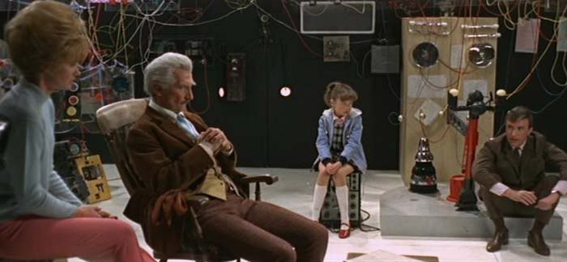
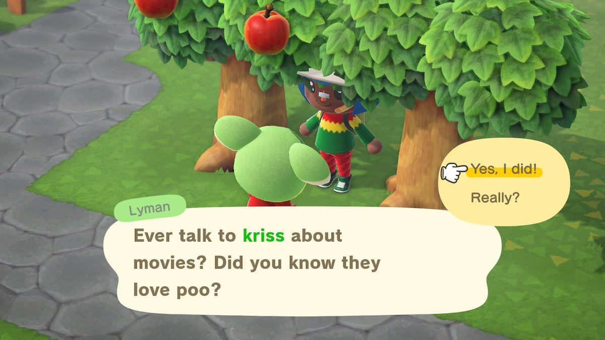

https://twitter.com/suddiraval/status/1258711756341424128 @suddiraval Environmental storytelling.
Why are there so many chonky bois in gears of tactics?
https://twitter.com/evilpaul_atebit/status/1258356493851770882 @evilpaul_atebit it can make sense to fork another library into a branch so it can be hacked around with, kept close to your main source and still be pushed back to its original repo easily if you make any useful changes.
I also keep built binaries in a branch with no history, so only latest.
Not only does Death Race 2000 predict extra points for killing grandma but I strongly suspect the main plot predicts how this all ends.
Flash forward 40 years as minecraft kid, now grown up, drops protesting parents off at the cheapest nursing home money can buy.
The last words they hear is "Actions have consequences."
Ping?
https://twitter.com/Graham_T_S/status/1256706522475888640 @Graham_T_S I'll give you 5,000 bells for the spider and 500 bells for the watch.
https://twitter.com/Gadgetoid/status/1256674225248763904 @Gadgetoid four gamer chairs in the wild. 
https://twitter.com/wetgenes/status/1256558379289456645 I mean seriously all in the mouse, it shows up as a keyboard device as well when you plug it in and it literally sends the key-presses right into the USB port.
So it can be plugged into anything, even animal crossing...
What I'm looking for in a mouse is a voice recognition microphone that auto activates when you pick it up and can be used to dictate text.
Real programmers call it notwork code. https://t.co/9DHFXfbP0x
@imran That reminds me, I wonder how hard it would be to get giant holographic flames to come out of the top of all the big old chimneys in Bradford and would that count as a public art project.
#AnimalCrossing #ACNH #NintendoSwitch 
https://twitter.com/scutanddestroy/status/1255465780226994182 @scutanddestroy What we need to do is push things forward so it can start with a Dune 2 RTS and end with a Dune Jodorowsky RTS.
https://twitter.com/slembcke/status/1255363238604267523 @slembcke My brain is currently telling me that if I do some more work on my text editor it could be turned into some sort of "shader toy" ray marching test bed...
Which although true is not something I actually need for any reason whatsoever :)
https://twitter.com/wetgenes/status/1254847677713526784 Clay Book is probably the only seriously SDF based game that I am aware of but it is a mesh generator from SDF (right?) It also feels mostly like spherical voxels which are not quite strange enough.
I was curious if there are any "running in a shader" SDF based ray marching games and the answer is not really.
I guess I'm hoping for something like Ecstatica, a strange graphical style due to bizarre rendering constraints.
Today be like : https://www.youtube.com/watch?v=6Yt2CGvcgu8
https://twitter.com/OfficeOfWilson/status/1253402622968705026 @OfficeOfWilson @ManMadeMoon @prodnose a long long long time ago I used to work for "Cranberry Source"